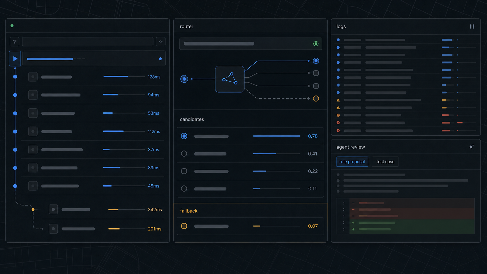
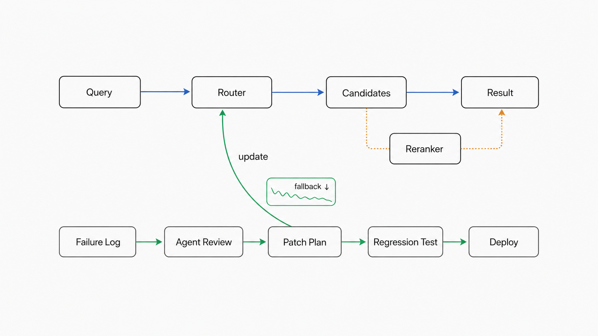

핵심 요약

- 이 글은 검색·추천·resolver를 운영하는 팀이 언제 LLM을 호출하고, 언제 빠른 DB 경로로 돌려보낼지 판단하는 데 초점을 둔다.
- 주소 검색 실패는 단순 문자열 오류가 아니라 뒤쪽 실거래가, 공시가격, 단지 정보 조회까지 전파되는 entity resolution 문제다.
- 에이전트의 역할은 모든 검색을 대신하는 것이 아니라, 실패 로그를 읽고 반복 패턴을 라우터·테스트 개선 후보로 바꾸는 것이다.
- 그래서 핵심 지표는 “LLM을 얼마나 많이 썼나”가 아니라 반복 실패가 다음 배포에서 얼마나 빠른 경로로 흡수됐나에 가깝다.
부동산 주소 검색에 LLM을 붙이는 건 쉬운 선택이었다.
사용자는 주소를 정석대로 입력하지 않는다. “OO대 앞 오피스텔”처럼 장소명과 건물 유형을 섞어 쓰고, “OO아파트 상가동”, “OO단지 경비실”, “OO아파트 테니스장”처럼 실제 주거 단지가 아닌 시설명을 입력하기도 한다.
이런 입력을 볼 때 가장 먼저 드는 생각은 단순하다.
LLM이 한 번 정리해주면 되지 않을까?
하지만 검색창 뒤에 있는 시스템은 채팅창과 다르다.
주소 검색은 빠르게 응답해야 하고, 같은 입력에는 같은 결과를 돌려줘야 한다. 무엇보다 검색 결과는 뒤쪽의 실거래가, 공시가격, 단지 정보 조회로 이어진다. 첫 후보가 틀리면 뒤쪽 데이터가 모두 그럴듯하게 틀어진다.
그래서 LLM을 검색 요청마다 호출하지 않는 방향을 선택했다.
대신 실패를 버리지 않았다. 검색이 흔들린 순간을 로그로 남기고, 에이전트가 그 로그를 읽게 했다. 에이전트의 역할은 검색을 대신하는 것이 아니라, 다음 배포에서 같은 실패가 반복되지 않도록 라우터 개선 후보를 만드는 것이었다.
문제의 초점은 LLM을 어디에 붙일지가 아니라, 어떤 실패를 다음 배포에서 빠른 경로로 되돌릴 수 있느냐였다.
문제: 주소 검색 실패는 뒤쪽 데이터 조회까지 전파된다
처음에는 주소 검색을 단순한 정규화 문제로 봤다.
사용자가 입력한 문자열을 정리해서 DB에서 찾을 수 있는 주소나 단지명으로 바꾸면 된다고 생각했다. 예를 들어 이런 식이다.
입력: OO대 앞 오피스텔
기대: OO대 인근 오피스텔 후보 검색그래서 앞단에 정규식 기반 라우터를 두었다. 입력 문자열에서 지역명, 단지명, 건물 유형, 주소 힌트를 빠르게 분리하고 적절한 검색 경로로 보내는 역할이다.
정규식은 빠르다. 대부분의 명확한 주소는 이 단계에서 충분히 처리된다.
문제는 정규식이 문맥을 모른다는 점이다.
예를 들어 “OO대 앞 오피스텔”이라는 입력에서 “OO대 앞”을 위치 힌트로 보존하지 못하고 “오피스텔”만 남기면 어떻게 될까. 라우터 입장에서는 장소명과 건물 유형을 분리한 것처럼 보이지만, 사용자 의도 입장에서는 핵심 위치 정보가 사라진다.
입력: OO대 앞 오피스텔
라우터 처리: "오피스텔"만 검색
결과: 전혀 다른 지역의 오피스텔 후보가 상위 노출이때 알게 됐다. 주소 검색은 단순한 문자열 정규화가 아니었다.
주소 검색은 사용자의 입력 문자열을 실제 부동산 객체에 연결하는 문제다. 조금 더 기술적으로 말하면 entity resolution에 가깝다. 사용자가 입력한 말이 어떤 단지, 어떤 필지, 어떤 건물을 가리키는지 찾아야 한다.
그리고 이 연결이 틀리면 뒤쪽은 전부 틀어진다.
단지 key가 틀리고, 실거래가가 틀리고, 공시가격과 주변 환경 정보도 틀어진다. 첫 단계의 작은 오해가 전체 응답의 품질을 결정한다.
주소 검색은 첫 단계지만, 실패 비용은 마지막까지 전파된다.
선택지: 모든 입력을 LLM에 보내면 왜 위험한가
주소 정제가 어렵다면 가장 쉬운 선택은 모든 입력을 LLM에 보내는 것이다.
사용자 입력
→ LLM 주소 정규화
→ DB 조회
→ 결과 반환이 구조는 매력적이다. 정규식으로 예외를 계속 늘리지 않아도 되고, 사용자의 애매한 표현도 LLM이 알아서 해석해줄 것처럼 보인다.
하지만 검색 시스템에서는 잘 맞지 않았다.
첫째, 주소 검색은 대화형 답변보다 훨씬 짧은 응답 시간을 요구한다. 사용자는 검색창에 입력한 뒤 결과가 즉시 뜨기를 기대한다. 여기에 매번 모델 호출이 들어가면 사용자는 그냥 “검색이 느리다”고 느낀다.
둘째, 대부분의 요청은 모델 없이도 처리 가능하다. 정상적인 도로명주소, 명확한 단지명, 이미 DB에서 바로 찾을 수 있는 요청까지 LLM에 보내는 것은 낭비다.
셋째, 통제 가능성이 떨어진다. 주소 검색에서 필요한 결과는 “그럴듯한 주소”가 아니라 “DB와 연결 가능한 객체”다. LLM이 자유롭게 주소를 생성하거나 보정하면 결과가 왜 그렇게 나왔는지 추적하기 어려워진다.
그래서 방향을 바꿨다.
LLM을 앞단에 세우지 않는다. 대부분의 요청은 기존처럼 정규식과 DB가 처리한다. LLM은 그 둘이 확신하지 못하는 케이스에만 호출한다.
운영 로그를 기준으로 보면 LLM이 필요한 케이스는 전체의 일부였다. 대부분은 룰과 DB 조회로 지나갔고, 일부만 fallback이 필요했다.
그래서 이 파이프라인의 목표는 “LLM으로 주소 검색을 해결하기”가 아니라 LLM을 호출해야 하는 마지막 구간을 잘 고르는 것이 됐다.
지표: LLM fallback rate를 비용이 아니라 라우터 신호로 본다
LLM 호출 여부를 단순한 비용 지표로만 보지는 않았다.
주소 검색에서 LLM fallback rate는 라우터가 얼마나 많은 케이스를 스스로 처리하지 못하는지를 보여주는 신호였다. fallback rate가 올라가면 두 가지 가능성이 있다.
1. 새로운 입력 패턴이 들어오고 있다.
2. 기존 라우터가 너무 좁게 설계되어 있다.반대로 fallback rate가 너무 낮은데 실패율이 올라가면, 애매한 요청을 억지로 룰에서 처리하고 있을 가능성이 있다.
그래서 중요한 건 LLM 호출 비율을 무작정 낮추는 것이 아니었다.
필요한 케이스는 LLM으로 보내야 한다. 다만 반복되는 실패는 계속 LLM에 맡기면 안 된다. 실패 패턴이 명확해졌다면 다음에는 라우터가 그 패턴을 처리해야 한다.
즉, fallback은 영구 경로가 아니라 관찰 경로에 가까웠다.
처음 보는 애매한 입력은 fallback으로 보낸다. 그 결과를 로그로 남긴다. 같은 유형의 실패가 반복되면 에이전트가 패턴을 묶고, 사람이 검토할 수 있는 개선 후보로 바꾼다.
이 루프가 돌수록 fallback은 다시 예외 처리 경로로 작아진다.
구조: 에이전트는 검색 요청이 아니라 실패 로그를 본다
에이전트를 붙인다고 해서 모든 검색 요청을 에이전트에게 보내지는 않았다.
그건 다시 LLM-first 구조로 돌아가는 일이다. 목표는 검색 중간에 에이전트가 끼어드는 구조가 아니었다.
에이전트에게 맡긴 일은 “검색을 대신하라”가 아니었다.
실패를 읽고, 다음 배포에서 같은 실패가 반복되지 않게 만들 제안을 하라.
그래서 에이전트는 검색이 끝난 뒤의 로그를 본다.
- raw query
- router decision
- DB 후보 개수
- LLM 호출 여부
- LLM fallback 여부
- reranker 선택 후보
- 최종 resolved key
- 후속 조회 성공 여부이 로그에는 검색 파이프라인이 어디서 흔들렸는지가 남아 있다. 어떤 입력이 라우터에서 잘못 잘렸는지, 어떤 후보군에서 상가동이나 경비실 같은 노이즈가 반복되는지, 어떤 케이스가 매번 LLM fallback까지 넘어가는지 확인할 수 있다.
여기서 에이전트의 역할은 운영 코드를 직접 고치는 것이 아니다.
에이전트는 실패 로그를 읽고, 반복되는 패턴을 묶고, 사람이 검토할 수 있는 변경 단위로 정리한다.
실패 로그 수집
→ 에이전트가 실패 유형 분류
→ 라우터 / 정규식 개선 후보 제안
→ fallback 조건 조정 제안
→ regression test 추가 제안
→ 사람 리뷰
→ 다음 배포아직 완전 자율 개선 시스템은 아니다. 에이전트가 운영 rule을 마음대로 바꾸지 않는다. 반영 여부는 사람이 검토한다.
하지만 개선 루프의 앞부분은 에이전트가 충분히 도울 수 있었다. 실패 로그를 사람이 하나씩 뒤지는 대신, 반복 패턴과 수정 후보를 먼저 받아볼 수 있었기 때문이다.
예시: 하나의 실패가 라우터 개선으로 바뀌는 과정

실패 로그는 단순한 디버깅 기록이 아니라 다음 라우터를 개선하는 재료였다.
예를 들어 OO대 앞 오피스텔이라는 입력이 들어왔다고 하자. 라우터가 OO대 앞을 위치 힌트로 보존하지 못하고 오피스텔만 남기면, 검색 후보는 전혀 다른 지역으로 튈 수 있다.
이때 로그에는 다음 정보가 남는다.
raw_query: OO대 앞 오피스텔
router_output: 오피스텔
candidate_count: 12
selected_candidate_region: 다른 지역
llm_fallback: true
downstream_status: low_confidence에이전트는 이런 실패를 하나의 사건으로만 보지 않는다. 비슷한 로그를 묶어 대학명 + 건물 유형 패턴이 반복되고 있는지 본다.
그리고 사람이 검토할 수 있는 변경 단위로 정리한다.
## 개선 제안: 대학명 + 건물 유형 패턴
### 관찰
`대학명 + 오피스텔` 형태의 입력에서 위치 힌트가 제거되는 케이스가 반복됨.
### 영향
위치 힌트가 사라지면서 다른 지역 후보가 상위에 노출됨.
### 제안
- 대학명 토큰을 `location_hint`로 보존
- DB 후보 검색 시 `keyword = "{대학명} {건물유형}"` 유지
- 후보가 여러 개이고 confidence가 낮으면 reranker 호출
### regression test
- 입력: OO대 앞 오피스텔
- 기대: OO대 인근 오피스텔 후보 우선이 제안이 반영되면 같은 유형의 요청은 다음부터 LLM fallback까지 가지 않는다. 라우터가 위치 힌트를 보존하고, DB 후보 검색만으로 결과를 좁힐 수 있다.
Before:
OO대 앞 오피스텔
→ 라우터가 위치 힌트 제거
→ DB 후보가 다른 지역으로 튐
→ LLM fallback
→ reranker
→ 결과
After:
OO대 앞 오피스텔
→ 라우터가 location_hint 보존
→ DB 후보 검색
→ 결과반복 실패가 라우터로 흡수되면, LLM은 다시 예외 처리 경로로 작아진다.
이게 이 구조의 핵심이다.
에이전트는 LLM을 더 쓰기 위해 있는 게 아니라, LLM을 덜 쓰도록 시스템을 개선하기 위해 있다.
마지막 구간의 LLM은 생성기가 아니라 reranker다
물론 모든 케이스를 라우터로 흡수할 수는 없다.
애매한 입력은 계속 생긴다. 검색 후보가 여러 개 나오고, 그중 어떤 후보가 진짜 의도에 가까운지 판단해야 하는 경우도 있다.
예를 들어 사용자가 “OO아파트”를 입력했는데 후보가 이렇게 나온다고 해보자.
1. OO아파트 테니스장
2. OO아파트 상가동
3. OO아파트 경비실
4. OO아파트 단지기계적으로 첫 번째 후보를 고르면 틀릴 수 있다. 테니스장, 상가동, 경비실은 실제 검색 API에서는 상위에 뜰 수 있지만, 사용자가 찾는 대상은 대개 “OO아파트 단지”다.
여기서는 LLM을 쓴다. 다만 LLM에게 새 주소를 만들라고 하지 않는다.
나쁜 방식은 이렇다.
이 입력이 가리키는 올바른 주소를 알려줘.선택한 방식은 달랐다.
사용자 입력과 후보 목록이 주어진다.
새로운 주소를 만들지 말고, 후보 중 가장 적절한 항목의 번호만 반환하라.LLM에게 열린 생성 문제를 주지 않고, 닫힌 선택 문제를 준 것이다.
후보는 DB와 검색 시스템이 만들고, LLM은 그 안에서 고른다. 이 구조에서는 모델이 존재하지 않는 주소를 만들어낼 여지가 줄어든다. 선택 결과도 로그로 남길 수 있다.
그리고 그 선택 결과는 다시 에이전트가 읽는다.
어떤 후보군에서 reranker가 자주 호출되는지, 어떤 노이즈가 반복되는지, 어떤 패턴은 라우터나 후보 생성 단계로 흡수할 수 있는지 다시 분류한다.
LLM은 마지막 구간의 판단을 돕고, 에이전트는 그 판단이 반복되는 이유를 읽는다.
모든 실패가 LLM 문제는 아니다
실패 로그를 읽는 에이전트에게 가장 먼저 가르쳐야 한 것은 “모든 실패를 프롬프트 문제로 보지 말라”는 것이었다.
주소 검색 실패에는 적어도 두 종류가 있었다.
첫째, 입력 해석 실패다.
사용자의 위치 힌트를 잘라내거나, 후보 중 진짜 단지를 고르지 못하는 경우다. 이런 문제는 라우터 개선이나 LLM reranker로 줄일 수 있다.
둘째, 데이터 연결 실패다.
부동산 데이터는 여러 체계가 섞인다. 단지, 필지, 건축물, 실거래, 공시가격 데이터가 서로 다른 주기로 갱신된다. 그래서 어떤 신규 단지는 실거래 데이터가 있는데 단지 key가 아직 없을 수 있다.
이 경우 단지 key만 기준으로 보면 검색은 실패한다.
실거래 데이터: 있음
단지 key: 없음
결과: 단지 기반 조회 실패이건 모델이 더 똑똑해진다고 해결되지 않는다.
프롬프트를 고쳐도 없는 key가 생기지는 않는다.
여기서는 PNU 기반 fallback처럼 데이터 구조 안에서 우회 경로를 만들어야 한다.
단지 key 조회 실패
→ PNU 기반 조회
→ 위치 / 필지 기반 정보 연결사용자 입력이 애매한 문제는 LLM이 도울 수 있다. 하지만 데이터 key가 비어 있는 문제는 데이터 모델과 fallback 경로로 풀어야 한다.
에이전트가 실패 로그를 읽을 때도 이 구분이 중요했다. 어떤 실패는 라우터 개선 후보가 되고, 어떤 실패는 데이터 pipeline 개선 후보가 된다. 둘을 구분하지 못하면 모든 문제를 LLM fallback으로 밀어 넣게 된다.
LLM을 많이 쓴다고 데이터 결손이 사라지지는 않는다.
이 과정에서 얻은 설계 원칙
이 개선을 거치면서 기준이 조금 명확해졌다.
LLM을 쓰기 좋은 지점은 이런 곳이다.
- 입력이 애매하다
- 후보가 여러 개다
- 후보 중 선택이 필요하다
- 선택지는 시스템이 이미 생성했다
- 모델은 새 값을 만들지 않아도 된다반대로 LLM을 쓰지 않는 편이 나은 지점도 있다.
- 주소가 명확하다
- DB에서 바로 찾을 수 있다
- 반복되는 실패 패턴이라 라우터로 흡수할 수 있다
- key가 없어서 fallback이 필요한 데이터 문제다
- 같은 입력에 대해 동일한 결과가 중요하다
- latency가 더 중요하다이 기준으로 보면 LLM은 주소 검색의 중심이 아니다.
중심은 여전히 라우터, DB 후보, 도메인 fallback, 실패 로그다. LLM은 마지막에 남는 애매함을 줄여주는 장치다. 에이전트는 그 로그를 읽고 중심부를 조금씩 개선한다.
검색 요청은 먼저 라우터와 DB를 지난다. 애매한 후보 선택만 LLM reranker가 맡는다. 실패는 로그로 남고, 에이전트는 그 로그를 읽어 다음 라우터 개선 후보를 만든다. 데이터 key가 비어 있는 문제는 프롬프트가 아니라 PNU fallback 같은 데이터 구조로 해결한다.
이 루프가 돌수록 같은 실패는 LLM까지 가지 않는다.
마무리
이번 개선에서 중요한 건 LLM을 얼마나 잘 호출했느냐가 아니었다.
LLM을 호출하지 않아도 되는 케이스를 얼마나 많이 빠른 경로로 되돌렸느냐였다.
모든 요청을 LLM에 보내면 시스템은 똑똑해 보이지만 느려진다. 모든 요청을 정규식과 DB로만 처리하면 빠르지만 애매한 입력에서 자주 틀린다.
그래서 두 경로 사이에 선을 그었다.
대부분의 요청은 빠르게 지나간다. 마지막 일부만 LLM이 본다. 그리고 그 마지막 일부에서도 LLM은 정답을 생성하지 않는다. 후보 중에서 고른다.
에이전트는 이 구조를 운영하는 데 쓰인다.
실패 로그를 읽고, 반복 패턴을 찾고, 라우터와 fallback 조건을 개선할 후보를 만든다. 이 루프가 잘 돌수록 같은 실패는 다음번에 LLM까지 가지 않는다.
부동산 주소 검색에서 LLM은 주인공이 아니었다.
잘 만든 라우터, 좋은 후보, 도메인 fallback, 그리고 실패 로그가 먼저였다. 에이전트는 그 로그를 읽고 시스템을 조금씩 고쳤다.
LLM을 덜 쓰기 위해, 에이전트는 검색창 앞이 아니라 로그 뒤에 서야 했다.